QAOA on the Hamming Cube
In this post, I want to understand what QAOA actually does when we stop looking at it as a list of gates.
The short version: QAOA is a slow slide from an easy matrix to a hard one, chopped into pieces, and then cleverly cut short. The easy matrix is the Hamming cube itself, the hard one holds the answer to our problem. But let us build this up slowly.
All we need for this is a bit of linear algebra (matrices, eigenvalues, eigenvectors) and a bit of quantum computing (qubits, the Pauli matrices $X$ and $Z$, the Hadamard gate). Everything else we build on the way.
The problem
- As usual, we begin with the problem setup.
Problem 1: MaxCut.
Given a graph $G = (V, E)$ with $n$ vertices, split the vertices into two sides such that as many edges as possible go between the two sides.
We will refer to this as Problem 1.
- We write a split as a bitstring $x \in \{0,1\}^n$, where $x_i$ tells us on which side vertex $i$ sits. The number of cut edges is
$$
C(x) = \sum_{(i,j) \in E} [x_i \neq x_j],
$$
and we are looking for $x^* = \arg\max_x C(x)$.
Pretty simple I would say. Unfortunately there are $2^n$ bitstrings, so trying all of them is not an option for large $n$. QAOA is one quantum attempt at this. Let us see what it really does.
The stage: bitstrings on a cube
- A bitstring describes a whole candidate cut. Let us give each of the $2^n$ bitstrings its own corner and connect two corners whenever they differ in exactly one bit. With one bit we get a line segment, with two a square, and with three the familiar cube. In general this is the Hamming cube, or Boolean hypercube, $Q_n$.
Every corner has $n$ neighbors, one for each bit we can flip. The shortest path between $x$ and $y$ has length $d_H(x,y)$, the number of bits in which they differ. So this picture also tells us what a small change to a candidate solution means: one step along a cube edge moves one vertex of the problem graph to the other side of the cut.
- Let us put an actual MaxCut problem onto this cube. Take the three-vertex path $1\! -\! 2\! -\! 3$, and write the bits in vertex order, $x_1x_2x_3$. Its cost is
$$
C(x) = [x_1 \neq x_2] + [x_2 \neq x_3].
$$
At $000$, all three vertices are on the same side and $C(000)=0$. At $010$, vertex 2 is on the other side from vertices 1 and 3, so both edges are cut and $C(010)=2$. These assignments are neighbors on the cube: flipping the middle bit takes us from one to the other.
From a cut to a corner3 vertices → 8 assignments
Select a cube corner, or click a problem vertex to flip its bit. Use Tab and Enter or Space with the keyboard. Change the problem edges to redraw the costs.
Problem graph G · one cut
Teal: side 0. Plum: side 1.
Solid edges are cut; dashed edges are uncut.
Search graph Q₃ · all cuts
Cut size C(x):
0
1
2
Selected
One step along the cube: move one problem vertex to the other side.
Each corner is a complete assignment, written x₁x₂x₃. Blue cube edges lead to its three one-bit neighbors. The costs are values on corners; the cube edges represent possible moves.

A cut on the problem graph becomes one corner of the cube. The number inside each cube corner is $C(x)$; the blue ring marks the selected assignment.
The values on all eight corners of the path example are:
| $x$ | 000 | 001 | 010 | 011 | 100 | 101 | 110 | 111 |
|---|
| $C(x)$ | 0 | 1 | 2 | 1 | 1 | 2 | 1 | 0 |
|---|
- There are two graphs in this picture. The problem graph $G$ has $n$ vertices; its edges tell us which pairs contribute to the cut. The search graph $Q_n$ has $2^n$ corners; its edges tell us which assignments differ by a single bit. The cost function assigns a number to each corner of $Q_n$. This is our optimization landscape, and for MaxCut we want the highest values.
Try adding the problem edge $(1,3)$ to close the path into a triangle. The cube still has the same eight corners and twelve edges, but its cost values change: now every nonconstant bitstring cuts two edges. Changing the problem changes the landscape on the cube. Also notice that $010$ and $101$ have the same cost. Flipping every bit just swaps the two sides of a cut, so $C(x)=C(\bar x)$ for every MaxCut instance. We keep both assignments as distinct cube corners and quantum basis states.
- Now the quantum part. An $n$-qubit basis state $\ket{x}$ is labeled by one of these bitstrings. A state $\ket{\psi}=\sum_x\psi(x)\ket{x}$ places a complex amplitude on every corner. The cost operator reads the value at a corner,
$$
C\ket{x}=C(x)\ket{x},
$$
while the Pauli operator $X_i$ flips bit $i$ and takes us to a neighboring corner. The adjacency matrix of the cube is therefore
$$
A = X_1 + X_2 + \dots + X_n .
$$
This is exactly the operator QAOA calls the mixer (usually written $B$). We now have the two ingredients in one picture: $C$ gives the values on the corners, and $A$ connects corners through single-bit flips. Both are just $2^n \times 2^n$ matrices, and as we will see now, the answer to Problem 1 is hidden in one of them.
The answer is hidden in a matrix
-
Look at $C$ again. It is a diagonal matrix: the basis vector $\ket{x}$ of every corner is an eigenvector, with the cut value $C(x)$ as eigenvalue. So a maximum cut is simply an eigenvector of $C$ with the largest eigenvalue.
-
For the circuits later, it helps to write $C$ with Pauli matrices. $Z_i$ reads bit $i$ and turns it into a sign,
$$
Z_i \ket{x} = (-1)^{x_i} \ket{x} .
$$
So $Z_i Z_j \ket{x} = +\ket{x}$ if $x_i = x_j$ (same side) and $-\ket{x}$ if $x_i \neq x_j$ (different sides). That means $\tfrac{1}{2}(I - Z_i Z_j)$ is $0$ for an uncut edge and $1$ for a cut edge, and summing over the edges gives
$$
C = \sum_{(i,j) \in E} \frac{1}{2}\big(I - Z_i Z_j\big) .
$$
- Physicists like to minimize energy instead of maximizing cuts, so we flip the sign and call
$$
H_C = -C
$$
the problem Hamiltonian. A Hamiltonian is just a Hermitian matrix. Its eigenvalues are called energies, and the eigenvector with the smallest eigenvalue is called the ground state. So the ground states of $H_C$ are exactly the maximum cuts.
- Great, the answer is hidden in a matrix: it is the ground state of $H_C$. Unfortunately, $H_C$ is diagonal, so finding its ground state means finding the smallest of $2^n$ numbers on the diagonal, which is exactly the problem we started with. The problem is the same, it just wears a lab coat now.
But a matrix can do something a list of numbers cannot: we can turn it continuously into another matrix. For that we need a second matrix whose ground state is easy. Luckily, we already have one.
An easy matrix: the cube itself
- Take the mixer from above and put a minus sign in front of it:
$$
H_B = -A = -\big(X_1 + X_2 + \dots + X_n\big) .
$$
Let us look at one qubit first. $-X$ has the eigenvector $\ket{+} = (\ket{0} + \ket{1})/\sqrt{2}$ with eigenvalue $-1$ and the eigenvector $\ket{-} = (\ket{0} - \ket{1})/\sqrt{2}$ with eigenvalue $+1$. So the ground state of one qubit is $\ket{+}$, which is just a Hadamard gate applied to $\ket{0}$.
- The $n$ terms of $H_B$ act on different qubits, so its eigenvalues are sums of $n$ numbers $\pm 1$. The smallest one, $-n$, belongs to $\ket{+}$ on every qubit:
$$
\ket{+}^{\otimes n} = \frac{1}{\sqrt{2^n}} \sum_{x} \ket{x} .
$$
On the cube this makes a lot of sense. Every corner has $n$ neighbors, so the adjacency matrix $A$ maps the all-equal vector to $n$ times itself.
- This is the most undecided state possible: every bitstring with the same amplitude. Measuring it is random guessing. Not a great answer, but we can prepare it with one layer of Hadamard gates, and that is all we want from it.
So now we have two matrices: $H_B$, whose ground state we can make but do not care about, and $H_C$, whose ground state we care about but cannot make. Naive as I am, my first idea is: start in one and slowly turn it into the other.
Sliding from the cube to the cut
- We define a whole family of Hamiltonians,
$$
H(s) = (1 - s)\,H_B + s\,H_C, \qquad s \in [0, 1] .
$$
At $s = 0$ only the cube matters: who is next to whom. At $s = 1$ only the cut values matter: how good every corner is. In between, it is a bit of both.
-
Now the physics. The adiabatic theorem says: if you start in the ground state and change the Hamiltonian slowly enough, you stay in the ground state. It is a bit like moving a sleeping cat. Do it slowly and the cat stays asleep. Do it too fast and the cat wakes up and does something you did not plan for. So if we slide $s$ from 0 to 1 slowly, we start in $\ket{+}^{\otimes n}$ and end in a maximum cut. Problem solved!
-
Let us see this on the smallest possible example, one qubit with $H(s) = -(1-s)\,X - s\,Z$. As a matrix,
$$
H(s) = \begin{pmatrix} -s & -(1-s) \\ -(1-s) & s \end{pmatrix}, \qquad E_\pm(s) = \pm\sqrt{s^2 + (1-s)^2} .
$$
The ground state turns smoothly from $\ket{+}$ at $s = 0$ into $\ket{0}$ at $s = 1$, and the two energy levels never touch. Their distance is called the gap, and here it is smallest in the middle, where it is $\sqrt{2}$:
energy
+1 |*. .*
| '*.. ..*'
| ''**..........**'' upper level
|
| ..**''''''''''**.. lower level
| .*'' ''*.
-1 |*' '*
+-------------------------------------> s
0 1/2 1
smallest gap: sqrt(2)
- One qubit is a bit boring, so from now on our running example is the triangular prism: two triangles, connected by three rungs.
1
/|\
/ 4 \
/ / \ \
/ 6---5 \
/ / \ \
3-----------2
triangles: 1-2-3 and 4-5-6 rungs: 1-4, 2-5, 3-6
It has 6 vertices and 9 edges, so $2^6 = 64$ corners on the cube. A triangle can never have all three edges cut (two of its three vertices always end up on the same side), so the best we can do is $2 + 2 + 3 = 7$. Exactly 6 of the 64 bitstrings reach 7, so random guessing finds a maximum cut with probability $6/64 \approx 0.094$.
- Along the slide, the ground state of $H(s)$ slowly moves its weight onto the maximum cuts:
s 0 0.25 0.5 0.75 1
P(maximum cut) 0.094 0.139 0.266 0.627 1.000
expected cut 4.50 4.85 5.49 6.50 7.00
- A nice side effect of symmetry: the prism looks the same if you rotate it, mirror it or swap the two triangles, and the cut does not change if you flip all bits. $\ket{+}^{\otimes n}$, $H_B$ and $H_C$ do not care about any of this either. Because of that, the slide can only ever reach 8 particular combinations of the 64 basis states. Effectively we are sliding through an $8 \times 8$ matrix, not a $64 \times 64$ one.
You can play with this yourself. Move $s$ and watch the levels and the ground state, or press Play and let the slide run.
Toy 1. Sliding from the cube to the cut on the prism
Gap at this s
Smallest gap on the slide
P(maximum cut)
Expected cut
Energy levels of H(s)
The 8 levels the slide can reach. Teal: the ground state. Dark: the next level up. The blue bar is the gap.
Ground state: what you would measure
Probability of each cut value, the maximum cut in plum. Dashed outlines: random guessing. Cuts of 1 and 2 are impossible on the prism.
So far so good. But "slowly enough" is doing a lot of work in that sentence. How slow is slowly enough?
How slow is slowly enough? The gap
-
The answer is the gap. When the two lowest levels come close to each other, a small push is enough to kick the state from the lower level to the upper one, and then we end up somewhere we did not want to be. As a rule of thumb, the total time we need grows like one over the smallest gap squared.
-
The prism is a friendly example: among the 8 states we can reach, the gap never drops below about 0.98. Lucky us.
-
Not every problem is that friendly. Take a needle in a haystack: a single marked bitstring with energy $-1$, everything else at energy $0$. Then the smallest gap shrinks quickly with $n$:
n 4 6 8 10 12 14 16
min gap 0.348 0.182 0.096 0.050 0.026 0.014 0.007
2^(-n/2) 0.250 0.125 0.063 0.031 0.016 0.008 0.004
The gap roughly halves with every two extra qubits, just like $2^{-n/2}$. So slow becomes exponentially slow. If you are clever and only crawl where the gap is small, you get a running time of order $\sqrt{2^n}$, which is exactly Grover's speedup (Roland and Cerf showed this for search), and nothing better. There is no free lunch, but sometimes there is a cheaper lunch.
- For hard MaxCut instances the gap can also become tiny, and in general nobody knows in advance how small it will get.
Ok, let us say we know how slowly we have to go. There is still a practical problem: a gate-based quantum computer cannot just turn a knob on a Hamiltonian. It only applies gates. So how do we turn this slow slide into a circuit?
From a slow slide to a circuit
- For a fixed Hamiltonian $H$, the Schrödinger equation tells us that after time $t$ the state is $e^{-iHt}\ket{\psi}$. The matrix $e^{-iHt}$ is unitary, so it is a valid quantum operation. Our Hamiltonian changes with time, so we chop the total time $T$ into $p$ short pieces of length $\delta = T/p$ and keep $s$ fixed within each piece, at the values $s_1 < s_2 < \dots < s_p$:
$$
\ket{\psi_T} \approx e^{-i\delta H(s_p)} \cdots e^{-i\delta H(s_2)}\, e^{-i\delta H(s_1)}\, \ket{+}^{\otimes n} .
$$
- Each piece still contains the sum $H(s) = (1-s)H_B + sH_C$, and here is a small annoyance: for matrices, $e^{P+Q} = e^P e^Q$ only holds if $PQ = QP$. Ours do not commute, already for one qubit $XZ = -ZX$. But for a short piece the error of splitting is small (of order $\delta^2$):
$$
e^{-i\delta\,(P + Q)} \approx e^{-i\delta P}\, e^{-i\delta Q} .
$$
This is the Trotter trick. So every piece becomes two steps: first a little bit of $H_C$, then a little bit of $H_B$.
- And both steps are easy circuits.
a) $e^{-i\gamma H_C} = e^{i\gamma C}$ is diagonal: it multiplies every $\ket{x}$ by the phase $e^{i\gamma C(x)}$. Since $C$ is a sum over edges, it splits into one two-qubit $ZZ$ rotation per edge, all with the same angle.
b) $e^{-i\beta H_B} = e^{i\beta A}$ splits into one $X$ rotation per qubit, all with the same angle.
- Writing $\gamma_k = \delta\, s_k$ and $\beta_k = \delta\,(1 - s_k)$, the whole slide becomes the circuit
$$
\ket{\gamma, \beta} = e^{-i\beta_p H_B}\, e^{-i\gamma_p H_C} \cdots e^{-i\beta_1 H_B}\, e^{-i\gamma_1 H_C}\, \ket{+}^{\otimes n}
$$
start | piece 1 | piece 2 | ...
qubit 1 --H-- |-[ ]--[RX(b1)]-- |-[ ]--[RX(b2)]-- | ...
qubit 2 --H-- |-[ cost ]--[RX(b1)]-- |-[ cost ]--[RX(b2)]-- | ...
... |-[ (g1) ]-- ... -- |-[ (g2) ]-- ... -- | ...
qubit n --H-- |-[ ]--[RX(b1)]-- |-[ ]--[RX(b2)]-- | ...
cost(g): a ZZ rotation on every edge, angle set by g
RX(b): an X rotation on every qubit, angle set by b
with a schedule where $\gamma_k$ grows and $\beta_k$ shrinks as $s$ goes from 0 to 1. If you have seen QAOA before, this should look very familiar. If not, do not worry, we are about to get there. (Small print for comparing with the literature: Farhi et al. write $e^{-i\beta A} e^{-i\gamma C}$. That is our circuit with both angles negated, which only complex conjugates the state and changes no measurement probability.)
- Does it work? On the prism, a fine slide with $p = 40$ pieces gives
total time T 2 5 10 20 40
P(maximum cut) 0.35 0.65 0.89 0.97 0.994
So yes: slow enough really works. But 40 layers for 6 vertices is a lot of gates. My laptop checks all 64 bitstrings before I finish reading this sentence. Real quantum hardware is noisy, and every layer costs us. Can we get away with fewer?
QAOA: stop being slow, start being clever
- Here is the idea of QAOA (Farhi, Goldstone, Gutmann 2014): keep exactly this circuit shape, but forget about the slow slide. Treat the $2p$ angles $\gamma_1, \beta_1, \dots, \gamma_p, \beta_p$ as free knobs and tune them to make the expected cut
$$
\langle C \rangle = \bra{\gamma, \beta}\, C\, \ket{\gamma, \beta}
$$
as large as possible. On a quantum computer we estimate $\langle C \rangle$ by running the circuit and measuring, and a classical optimizer turns the knobs.
- Why could this beat the slow slide? Because we do not need to stay in the ground state the whole way. We only need to end up there. A clever schedule can leave the ground state and come back, like cutting through a park instead of following the road. Optimal control theory even tells us what the best schedule for a fixed total time looks like: hard switches between $H_C$ and $H_B$ at the beginning and at the end (called "bang-bang", exactly the alternating shape of QAOA), and possibly a smooth slide in the middle (Yang et al. 2017, Brady et al. 2021). So alternating the two matrices is not a crude approximation. It is close to what the best schedules do anyway.
The adiabatic theorem says: walk slowly and you will arrive. QAOA says: I do not care how I walk, as long as I arrive.
-
At depth 1 you can see the difference directly. The slide has $s_1 = 1/2$ and therefore $\gamma_1 = \beta_1 = T/2$, so it can only walk along the diagonal of the $(\gamma, \beta)$ plane. QAOA can go anywhere in the plane, and its best point, $(\gamma, \beta) \approx (0.57, 0.35)$, is off the diagonal.
-
Let us compare on the prism at the same number of layers $p$. On top the slide, where we only tune the total time $T$. Below QAOA, where we tune all angles:
layers p 1 2 3 4 6 8
slide, best T 0.35 0.40 0.51 0.75 0.89 0.92
QAOA, tuned angles 0.40 0.72 0.92 0.99 1.00 1.00
(probability that a measurement gives a maximum cut)
With 4 tuned layers, QAOA almost always returns a maximum cut. The plain slide needs about 30 layers and a total time of about 30 for that. (For the slide I tried every $T$ for which the pieces stay smaller than $\pi/2$. Bigger pieces make the angles wrap around, and then the circuit has nothing to do with sliding anymore. QAOA's angles are tuned for the expected cut and the slide's $T$ for the probability itself, so if anything, this table is unfair to QAOA.)
Why is the slide so bad with few layers? For a fixed $p$, a longer $T$ helps at first, because we go slower. But then it hurts, because the pieces get longer and the Trotter trick gets worse. With few layers you cannot be slow and careful at the same time. QAOA does not have this problem, because it does not even try to be slow.
- And here is the part I find really cute. Look at the tuned angles for $p = 4$:
layer k 1 2 3 4
gamma_k 0.38 0.77 1.03 1.27 growing
beta_k 0.53 0.37 0.20 0.09 shrinking
That is a slide! $\gamma$ grows and $\beta$ shrinks, just like $s$ going from 0 to 1. So QAOA rediscovers the slide on its own, just with fewer, bigger and better placed steps.
Small print 1: these are the angles you get if you grow the circuit one layer at a time and start each new optimization from a stretched version of the previous angles. This is the trick of Zhou et al., who saw the same slide-like pattern on many graphs. Random restarts find messier angles that are a tiny bit better (0.996 instead of 0.989 at $p = 4$). So the slide is not the only good path, but it is a very good one, and it is the one you find without luck.
Small print 2: $\beta$ only matters up to multiples of $\pi/2$ here. Adding $\pi/2$ to $\beta$ flips all bits, and our symmetric state does not care.
Again, you can play with it. Choose the number of layers $p$ and the total time $T$ of the slide, and compare the slide with QAOA's tuned angles. The button jumps to the best $T$ for the current $p$. Fun fact on the side: at short times the chopped slide can even beat the fine one (at $p = 4$ and $T \approx 4.6$, compare the teal and the gray curve). Being sloppy about the slide is not always bad, and that is the first hint at what QAOA does.
Toy 2. Walk slowly, or walk cleverly
Slide: P(maximum cut)
Slide: expected cut
QAOA, tuned: P(maximum cut)
QAOA, tuned: expected cut
Fine slide (p = 40) at this T
Angles per layer
Bars: the slide, teal for the cost angle γ and plum for the mixer angle β. Dark ticks: QAOA's tuned angles.
P(maximum cut) against T
Teal: the slide with p layers, faint where its pieces get longer than π/2. Gray: a fine slide with 40 layers. Dashed blue: QAOA with p tuned layers. Dotted: random guessing.
So is QAOA just a slide with better angles? Not quite, and the difference is where things get interesting.
What this picture tells us, and what it does not
-
It explains a lot: why the circuit alternates two kinds of layers (a chopped-up slide), why it starts with Hadamards (the ground state of $H_B$), and why good angles look like a ramp. It also gives a cheap default. If you do not know which angles to use, a smooth ramp is a decent first guess.
-
It tells us how to build QAOA for other problems. We need an easy matrix that only walks between valid solutions, and a start state that is its ground state. For constrained problems like independent sets, this leads to other mixers than $A$ (Hadfield et al.).
-
It tells us where to expect trouble. If the slide has to squeeze through a tiny gap, the slow version needs a very long time. QAOA might find a shortcut, but nothing guarantees it, and for a needle in a haystack nothing beats Grover's square root.
-
It does not explain small depth very well. At $p = 1$ or $2$, QAOA is far away from anything slow. There it behaves more like a cleverly tuned interference experiment: the cost layer writes the cut values into phases, the mixer lets nearby bitstrings interfere, and the angles decide where the interference is constructive.
-
There is also a classical cousin. Replace the rotations by damping, $e^{-i\beta H_B} \to e^{-tH_B}$ and $e^{-i\gamma H_C} \to e^{-\gamma H_C}$, and the two layers become mutation and selection of a genetic algorithm, acting on probabilities instead of amplitudes (more on that in GeneticAlgorithmsOnTheHammingCube). The classical version gets to good cuts by damping everything it does not want. The quantum version cannot damp anything, it can only rotate phases. So whatever advantage QAOA has must come from interference.
-
And to be honest: none of this shows that QAOA beats good classical algorithms for MaxCut. It shows what QAOA is trying to do, and that is already a lot more than a list of gates.
The dictionary
| Object |
In the slow slide |
In QAOA |
| Cut values $C$, problem Hamiltonian $H_C = -C$ |
where we want to end up: its ground states are the maximum cuts |
cost layer $e^{-i\gamma H_C}$, one $ZZ$ rotation per edge |
| Cube adjacency $A = \sum_i X_i$, easy Hamiltonian $H_B = -A$ |
where we start: its ground state is $\ket{+}^{\otimes n}$ |
mixer layer $e^{-i\beta H_B}$, one $X$ rotation per qubit |
| Start state $\ket{+}^{\otimes n}$ |
ground state of $H_B$ |
a Hadamard on every qubit |
| Slide parameter $s$ |
goes slowly from 0 to 1 |
becomes the angle schedule: $\gamma_k$ grows, $\beta_k$ shrinks |
| Gap |
sets how slowly we have to go |
no strict role, but small gaps make shortcuts hard |
| Total time $T$ and pieces $p$ |
how slowly we go, and how finely we chop |
the size of the angles, and the depth |
| Success |
slow enough means we end in the ground state |
tuned angles give the best expected cut at a fixed depth |
Literature
The algorithms:
- E. Farhi, J. Goldstone, S. Gutmann, M. Sipser, Quantum Computation by Adiabatic Evolution (2000). The slow slide as an algorithm.
- E. Farhi, J. Goldstone, S. Gutmann, A Quantum Approximate Optimization Algorithm (2014). The original QAOA paper, with the transverse-field mixer and the alternating ansatz.
- S. Hadfield et al., From the QAOA to a Quantum Alternating Operator Ansatz (2017). Other mixers for constrained problems, where the walk only connects valid solutions.
The slow slide and its gap:
Schedules and angles:
- Z.-C. Yang, A. Rahmani, A. Shabani, H. Neven, C. Chamon, Optimizing Variational Quantum Algorithms Using Pontryagin's Minimum Principle, Phys. Rev. X 7, 021027 (2017). For a fixed total time, the best schedules switch hard between the two Hamiltonians.
- L. T. Brady, C. L. Baldwin, A. Bapat, Y. Kharkov, A. V. Gorshkov, Optimal Protocols in Quantum Annealing and Quantum Approximate Optimization Algorithm Problems, Phys. Rev. Lett. 126, 070505 (2021). The refinement: hard switches at the beginning and at the end, often with a smooth slide in between.
- L. Zhou, S.-T. Wang, S. Choi, H. Pichler, M. D. Lukin, Quantum Approximate Optimization Algorithm: Performance, Mechanism, and Implementation on Near-Term Devices (2018). Tuned QAOA angles look like a slide, and how to use that to guess good angles for deeper circuits.
All numbers for the prism and the needle come from my own small simulation (exact state vectors, nothing fancy), so if something looks off, it is probably my fault and not the physics.